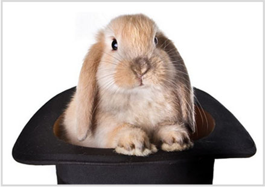

Why Choose Us
WonderOps was established to bridge the gap between small business and the expertise and costs of Information Technology. We began with software development building the ideas of entrepreneurs in web and mobile applications. As we became a trusted partner with our clients, we consulted across a broad cross section of technology.
As demands from our clients grew, we expanded our services into other areas core to the experience of our founder. Only those services that our existing client relationships asked for, and we could offer quality results with, are what we are willing to provide.
Our latest offering of server hosting gives our clients peace of mind with their applications. We provide a hardened Linux server and firewall to protect your assets. We then manage the operations of that server through a custom package solution according to the needs of our clients. Our model is simple. Once we know the costs of your custom solution, we charge a monthly flat rate above and beyond those costs to manage your server. That’s it. In addition to the hosting itself, we offer to our hosting clients system administration services for things like user account administration at a discounted rate. WonderOps can effectively be the server management team for your business.This is just one example where we keep it simple, make it secure, and offer cost effective quality services for our clients. It is with these core objectives that we believe we will continue to see the expanded growth of our company. We invite you to explore our services and learn how WonderOps can “Perform IT Magic” for your business.
As demands from our clients grew, we expanded our services into other areas core to the experience of our founder. Only those services that our existing client relationships asked for, and we could offer quality results with, are what we are willing to provide.
Our latest offering of server hosting gives our clients peace of mind with their applications. We provide a hardened Linux server and firewall to protect your assets. We then manage the operations of that server through a custom package solution according to the needs of our clients. Our model is simple. Once we know the costs of your custom solution, we charge a monthly flat rate above and beyond those costs to manage your server. That’s it. In addition to the hosting itself, we offer to our hosting clients system administration services for things like user account administration at a discounted rate. WonderOps can effectively be the server management team for your business.This is just one example where we keep it simple, make it secure, and offer cost effective quality services for our clients. It is with these core objectives that we believe we will continue to see the expanded growth of our company. We invite you to explore our services and learn how WonderOps can “Perform IT Magic” for your business.
WonderOps © 2013. All Rights Reserved.